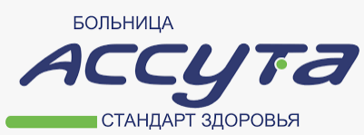

Онкологическое отделение, Ассута Рамат АхаяльУл. Хабарзель 20, Тель-Авив
Тел.: 03-7645177
Факс: 03-7645119
Эл. почта: cimo@assuta.co.il
«Конфиденциальные медицинские данные»: информация, содержащаяся в данном документе, защищена законом о неприкосновенности частной жизни. Разглашение данной информации является нарушением закона.
27/03/2024
Заключение осмотра – онкологическое отделение
№ уд. л.: МЕ923960-9
Имя: Жерлицына Анастасия
Дата рождения: 25/04/1976
Возраст: 47
Адрес: Хабарзель 20, Тель-Авив Яффо
Моб.: 03-7645177
Клинический диагноз:
| Диагноз | Код | Сторона | Дата | Состояние после | Вероятный диагноз | Рецидив |
|---|---|---|---|---|---|---|
| Гастроинтестинальная стромальная опухоль | Н89363 |
Обсуждение и заключение:
Зарегистрировано: д-р Эстер Таховер, № медицинской лицензии: 80855, онкологическое отделение, Рамат Ахаяль
Дата обновления: 27/03/2024 17:33
Отчет / обсуждение:
Предоставлена консультация Егору, брату пациентки, через Зум.
Продолжает принимать Иматиниб. Жалуется на боли в суставах и в животе.
Ревизия опухоли брюшной полости, рядом с желудком, и печени: обе – ГИСО.
ПЭТ от 08/2023: хороший ответ.
ПЭТ от 03/2024: заболевание стабильно, лишь минимальное накопление контраста.
ОАК и биохимический анализ крови: в пределах нормы.
Рекомендации:
Продолжать прием Иматиниба в той же дозе.
ПЭТ – каждые 3 месяца.
Следует рассмотреть возможность повторной биопсии, если и когда опухоль будет прогрессировать, для геномного тестирования.
Следует рассмотреть возможность приема препарата Прамин/Зофран при тошноте, ИПП при болях в животе (например, Омепразол), НПВП при мышечной боли (например, Иибупрофен).
Дальнейшее наблюдение с выполнением анализов крови, анализа на ТТГ и слежением за показателями АД.